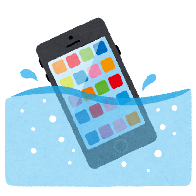
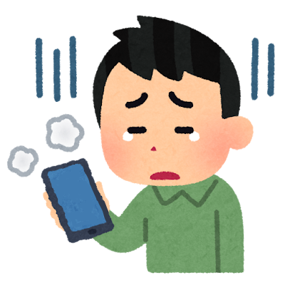

防水スマホでも水没する！？防水スマホだから水没しないわけではない理由を解説！
どうも皆さんこんにちは！ nyakorと申します。僕自身がお風呂で防水スマホを使っていたのに水没してヒヤヒヤしたので対処法と対策を紹介します。

僕はいつもののようにYouTubeを見て長風呂していました。
湯船に浸かりながら動画を...最高ですよね。 IPX8(水面下1mで30分浸けても壊れない)スマホだしお風呂場なんて余裕だと思っていました。
いつものようにお風呂から出て画面をスクロールしようとしたら..動かない。タップしても反応なし。パスコードすら打てないのでロック解除すらできませんでした。電源ボタンや音量ボタンは動くのに画面が死にました。何回も再起動して何とか動かす手段ないか試したんですがダメでした。

壊れた理由は
理由は...湯気と結露でした。
防水機能があるスマホでも実はお風呂場での使用は推奨していないのです。湯気は水と比べて非常に小さいためスマホの防水を通り抜けることがあるみたいで、お風呂は温度も高いのでゴム製のパッキンや接着剤は熱でふやけて隙間ができてしまうのでそこからも湯気が入りやすくなります。お風呂から上がってスマホを拭いていてもお風呂内での温度の差で結露してしまいスマホ内部に水滴ができて故障の原因になります。
水没した時の対処法
まずは電源を完全にオフにします。オフにしないと通電してショートして故障してしまいます。
次はSIMトレイを全開にして中の湿気を逃がします。あればSDカードも外してください。
これが一番効きがいいと思うのですが、ジップロックに乾燥剤とスマホを入れて三日間放置します。(一日だとまだ奥深くに水滴が残っている可能性が高いから気を付けましょう。)
やりがちですがドライヤーでは絶対に乾かさないでください。なぜかというと風が水を奥に飛ばしてトドメをさしてしまいます。しかも温風だと乾くと思うのですが..熱はバッテリーの老化を超早めます。あとスマホを振るのもダメです。水が奥に入り込んで死にます。表面だけ乾いていても中が濡れてるのでこれも注意が必要です。
僕はこれで三日後に奇跡的にタッチパネルが復活しました！！
今回は僕の運がよかったので奇跡的に復活しました。
そこでお風呂にもっていっても湯気や水没での故障の可能性を大幅に減らすアイテムがあるのでそれを紹介します。防水ポーチというものがありそれを使うことで解決します。数百円の防水ポーチをケチると数万円の修理費がかかることになるので気を付けましょう。
僕は1000円越えの防水ポーチを買うと無駄なんじゃないかと思って500円くらいのを使っていて安くて防水性能は最高だったので500円くらいのほうがいいなと思ったんですが、安いと耐久性がなかったりビニールが熱に弱かったり留め具が弱かったりして数か月で壊れるので結局1000円越えのいいやつ買うことにしました。でも500円くらいのほうも全然防水は効くし数か月持つので全然ありだと思います。僕のおすすめはこちら↓
でも防水ポーチでも結局中で結露するから意味ないんじゃないの？と思う人がいると思うのですがそれは防水ポーチの中乾燥剤を入れることで解決できます。(乾燥剤はお菓子のやつでもいい)
普通に乾燥剤なしでも防水ポーチあるだけで結露以外の故障原因がほぼないので、防水ポーチなしの裸よりは確実に安全に使えると思います。しかも防水ポーチだとスマホの画面に水滴がついて誤タッチされるなんてことも減ります。(ゼロにはなりません)
ということでどうだったでしょうか。今回の記事はスマホが水没した時の対処法と対策について話しました。僕は防水ポーチを買って前より画面に水滴がついて誤作動したりが減りました。( ´∀｀ )皆さんも水没には気を付けましょう！ということで読んでいただきありがとうございました。よい一日を！
ホームに戻る